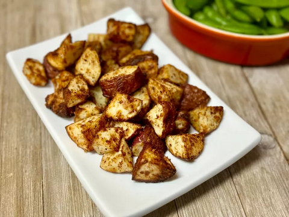

Crispy Potato Bites

Description
These crispy air fryer potato bites are crispy and flavorful on the outside, tender on the inside. The grated Parmesan creates a perfect crust in the air fryer.
Ingredients
- 1 pound red potatoes, cut into 1-inch cubes
- 1 tablespoon olive oil
- 1/2 teaspoon garlic powder
- 1/4 teaspoon salt
- 1/8 teaspoon freshly ground black pepper
- 2 tablespoons grated Parmesan cheese
Steps
- Preheat the air fryer to 400 degrees F (200 degrees C) according to manufacturer’s instructions.
- Place cubed potatoes in a large bowl. Add olive oil and toss to coat. Add garlic powder, salt and pepper; toss again. Add grated Parmesan and toss one last time.
- Place seasoned potatoes in the basket of the preheated air fryer. Cook for 8 minutes. Shake and cook until tender, about 4 minutes more. Serve immediately.